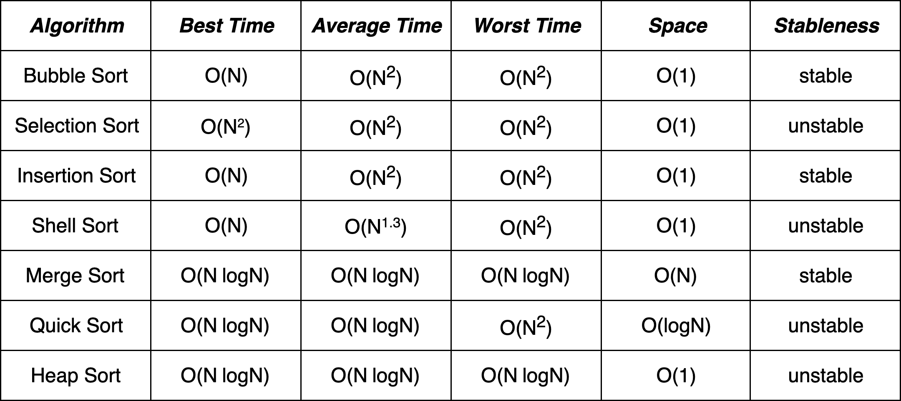

Popular Sorting Algorithms
A comparison on Best/Average/Worse Time complexity, Space Complexity and Stableness.
Implementations in C
Swap function
1 | /* |

Bubble Sort
1 | /* |
Selection Sort
1 | /* |
Insertion Sort
1 | /* |
Shell Sort
1 | /* |
Merge Sort
1 | /* |
Quick Sort
1 | /* |
Heap Sort
1 | /* |
Reference: The C Programming language